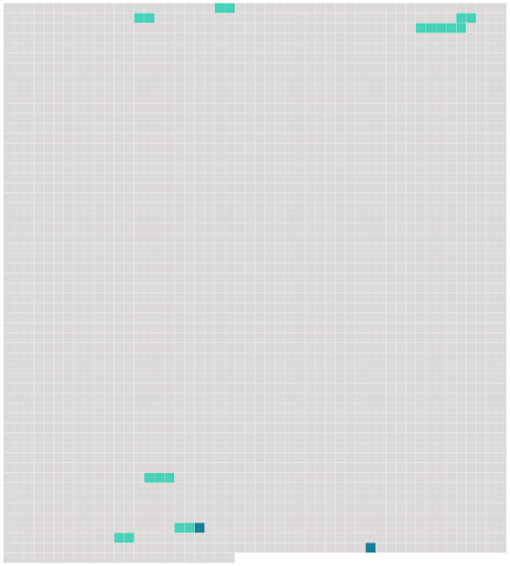

Longueur nb maillons : 9 mentions |
  |
Zèbre [2 phrases] Bien que 4 la phylogénie [des équidés] soit peu connue, ce groupe est manifestement paraphylétique, c'est-à-dire que si tous ces animaux descendent bien d'5 une espèce commune, toutes les espèces descendantes de [celle -ci] ne sont pas que des zèbres. [1 phrases]
6 Description [61 phrases] ammifere Il serait à 309 l'origine de [tous les équidés] ( cheval, 318 poney, âne, zèbre ). [8 phrases]
De 342 nos jours, il est presque impossible de distinguer le crâne d'un zèbre de 343 celui d'un cheval, mais nous pouvons penser que [les équidés] [qui] colonisèrent les savanes tropicales devinrent des zèbres, laissant 344 les déserts arides aux ânes sauvages et 346 les zones tempérées de 347 l'hémisphère Nord aux chevaux sauvages. Des fossiles datant du Pléistocène démontrent 345 la grande répartition de [ces équidés] [2 phrases]
356 L'évolution de 357 nombreuses espèces d' [équidés] est mal connue, mais on sait qu'il existait encore 360 des ânes sauvages et des zèbres en Europe à 358 la fin de 359 la dernière période glaciaire de 361 l’ ère quaternaire. |
 |
La ressource peut être téléchargée sur la page Ortolang
Si vous avez des questions ou vous voyez des erreurs, merci d'envoyer un mail à silvia.federzoni89@gmail.com
Site développé par S. Federzoni (contact)